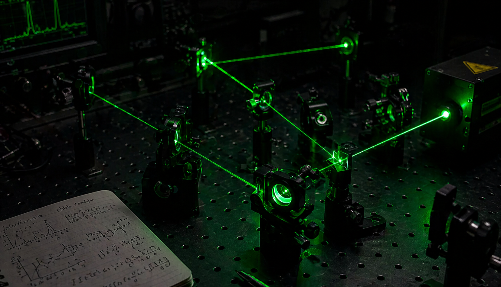

01
Ptolomeo · Siglo II
Geocéntrico
La Tierra está fija en el centro del Universo y todo gira alrededor de ella. El modelo era complejo (usaba epiciclos) pero predecía posiciones planetarias con cierta precisión.

La Tierra gira alrededor del Sol mientras cambia continuamente la dirección de su velocidad. Aunque la rapidez parezca estable, ese cambio de dirección implica aceleración. El Sol ejerce una fuerza gravitatoria que mantiene a la Tierra en su trayectoria cerrada.
El movimiento de traslación es el desplazamiento de la Tierra alrededor del Sol. Este recorrido dura aproximadamente 365,25 días, lo que define el año. Ese cuarto de día extra se acumula hasta que, cada cuatro años, se agrega un día al calendario: el año bisiesto.
La trayectoria no es un círculo perfecto sino una elipse, como describió Johannes Kepler en el siglo XVII. El Sol ocupa uno de los focos de esa elipse. Esto significa que durante el año la distancia Tierra-Sol varía levemente: en enero la Tierra está un poco más cerca del Sol (perihelio) y en julio, un poco más lejos (afelio).
A pesar de ese cambio de distancia, la variación es pequeña (menos del 3 %) y no es la causa de las estaciones. Las estaciones se explican por otra razón: la inclinación del eje terrestre.
Punto de la órbita más cercano al Sol. La Tierra se encuentra aquí a principios de enero.
Punto más alejado del Sol. Ocurre en julio, cuando en el hemisferio norte hace verano.
Que el perihelio (enero) coincida con el verano del hemisferio sur y el invierno del norte demuestra que la distancia al Sol no determina las estaciones. Si así fuera, sería verano en todo el planeta al mismo tiempo.
En física, la velocidad es un vector: tiene magnitud (rapidez) y dirección. Para que haya aceleración no es necesario que la rapidez cambie: basta con que cambie la dirección.
La Tierra recorre su órbita a unos 29,8 km/s de rapidez media. Esa rapidez se mantiene casi constante durante todo el año. Pero la dirección del movimiento cambia continuamente porque la trayectoria es curva. Ese cambio de dirección es exactamente lo que se llama aceleración centrípeta.
La aceleración centrípeta apunta siempre hacia el centro de la curva, es decir, hacia el Sol. Y la fuerza que la produce es la gravedad que el Sol ejerce sobre la Tierra.
La fuerza gravitatoria entre dos masas es proporcional al producto de sus masas e inversamente proporcional al cuadrado de la distancia entre ellas.
Cuando hacemos girar una pelota atada a un hilo, la mano ejerce la fuerza centrípeta. En el caso de la Tierra, el Sol hace el papel de la mano: ejerce la gravedad que "tira" de la Tierra hacia él, manteniéndola en órbita en lugar de dejarla escapar en línea recta.
En el movimiento rectilíneo uniforme la velocidad (dirección y módulo) no cambia. No hay aceleración. Un objeto en el espacio sin fuerzas se movería así.
En el movimiento rectilíneo uniformemente acelerado, la dirección es fija pero la rapidez aumenta o disminuye. La aceleración es paralela a la velocidad.
En el movimiento circular uniforme la rapidez es constante pero la dirección cambia todo el tiempo. Hay aceleración centrípeta, perpendicular a la velocidad.
El eje de rotación de la Tierra no es perpendicular al plano de su órbita: está inclinado 23,5° respecto a la vertical. Esa inclinación es constante y apunta siempre hacia la misma dirección en el espacio (hacia la estrella Polar).
A medida que la Tierra avanza en su órbita, el hemisferio que está inclinado hacia el Sol recibe los rayos de manera más directa y durante más horas. Eso produce el verano. El hemisferio opuesto, que recibe rayos inclinados y tiene días más cortos, experimenta el invierno.
Cuando ninguno de los dos hemisferios está más inclinado hacia el Sol que el otro, los rayos llegan de manera similar a los dos hemisferios y se producen la primavera o el otoño. Esos días se llaman equinoccios (del latín: noches iguales a los días).
El polo sur apunta hacia el Sol. Los rayos llegan más directos y el día dura más horas en el sur. En el norte ocurre el invierno simultáneamente.
El polo norte apunta hacia el Sol. El hemisferio sur recibe rayos inclinados y tiene noches más largas. Es verano boreal al mismo tiempo.
El eje terrestre no apunta ni hacia ni lejos del Sol. Los días y las noches duran aproximadamente lo mismo en ambos hemisferios.
Son los momentos del año donde la inclinación es máxima: el día más largo del año (solsticio de verano) o el más corto (solsticio de invierno).
En Argentina (hemisferio sur) el verano es en diciembre-febrero y el invierno en junio-agosto, al revés que en Europa o Estados Unidos.
Mientras la Tierra se traslada alrededor del Sol, también rota sobre su propio eje. Una rotación completa dura aproximadamente 24 horas, lo que define el día solar. Durante esa rotación, la mitad de la Tierra que enfrenta al Sol recibe luz (día) y la otra mitad queda en la sombra (noche).
La rotación ocurre de oeste a este cuando se la mira desde el polo norte. Por eso vemos al Sol salir por el este y ponerse por el oeste: en realidad somos nosotros los que giramos hacia él y luego nos alejamos.
El eje de rotación terrestre pasa por los polos geográficos y está inclinado respecto a la vertical del plano orbital. Esa misma inclinación que produce las estaciones también hace que la duración del día varíe a lo largo del año y que las regiones polares tengan períodos de luz o de oscuridad continua durante meses.
Tiempo entre dos mediodías consecutivos (Sol en el meridiano).
Rotación respecto a las estrellas. Levemente más corto por la traslación.
La Luna es el único satélite natural de la Tierra. Orbita a nuestro planeta a una distancia media de 384.400 km y tarda aproximadamente 27,3 días en completar una órbita (mes sidéreo).
Un fenómeno llamado rotación sincrónica hace que la Luna tarde exactamente lo mismo en girar sobre su eje que en orbitar la Tierra. Por eso siempre vemos la misma cara lunar.
La Luna no tiene luz propia: la que vemos es luz solar reflejada. Según la posición relativa entre Sol, Tierra y Luna, la parte iluminada que vemos cambia: son las fases lunares.
La Luna nueva, cuarto creciente, luna llena y cuarto menguante son las cuatro fases principales. Se deben al ángulo desde el que vemos la porción iluminada. El ciclo completo dura ~29,5 días (mes sinódico).
La gravedad de la Luna (y en menor medida, del Sol) deforma levemente los océanos. El lado de la Tierra más cercano a la Luna experimenta una pleamar (marea alta) y el lado opuesto también. Las mareas tienen un ciclo de aproximadamente 12,5 h.
Ocurre cuando la Luna se interpone entre el Sol y la Tierra. La sombra de la Luna cae sobre una región de la Tierra. Solo ocurre en luna nueva.
Ocurre cuando la Tierra se interpone entre el Sol y la Luna. La sombra de la Tierra oscurece la Luna. Solo ocurre en luna llena.
La Tierra está fija en el centro del Universo y todo gira alrededor de ella. El modelo era complejo (usaba epiciclos) pero predecía posiciones planetarias con cierta precisión.
El Sol ocupa el centro y los planetas giran a su alrededor. Simplificó el modelo y explicó mejor los movimientos observados, aunque seguía usando órbitas circulares.
Las órbitas son elipses con el Sol en un foco. Los planetas no se mueven a velocidad constante: van más rápido cuando están más cerca del Sol (segunda ley).
La gravedad explica por qué los planetas orbitan. La fuerza entre dos masas depende de sus masas y disminuye con el cuadrado de la distancia. Las leyes de Kepler se derivan de esta teoría.
Próximamente vas a poder explorar la órbita terrestre en tres dimensiones: ajustar la velocidad, observar la aceleración centrípeta en tiempo real y comprender visualmente cómo el cambio de dirección produce aceleración aunque la rapidez sea constante.
Aquí se cargará el modelo interactivo de la órbita terrestre. Mientras tanto, explorá el contenido de arriba para comprender los conceptos físicos.
Tiene módulo (rapidez) y dirección. Cambiar cualquiera de los dos implica aceleración. En la órbita, el módulo casi no cambia, pero la dirección sí lo hace continuamente.
Aceleración que apunta hacia el centro de la curva en todo movimiento circular. Su fórmula es a = v²/r. Proviene de la fuerza gravitatoria del Sol.
Figura geométrica con dos focos. El Sol ocupa uno de los focos de la elipse que traza la Tierra. La excentricidad de la órbita terrestre es muy pequeña: parece casi circular.
El eje de la Tierra está inclinado 23,5°. Esa inclinación es la causa directa de las estaciones y de la variación en la duración del día a lo largo del año.
El movimiento siempre se describe respecto a un observador elegido. Desde la Tierra, el Sol parece moverse. Desde el espacio, la Tierra orbita al Sol. Ambas descripciones son válidas.
Es la distancia media entre la Tierra y el Sol: 1 UA ≈ 150 000 000 km. Se usa como unidad para medir distancias dentro del Sistema Solar. Júpiter está a ~5,2 UA del Sol.